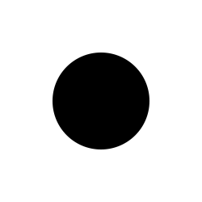
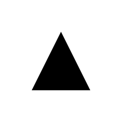

about
about
The projects listed here are categorized as:Commercial
Client Work

Games, Apps and Artwork

Experimental WorkBIO
Francis Lam is a designer, new media artist and programmer currently based in Shanghai. He was brought up and educated in Hong Kong. After his studies in Computer Science and Graphic Design, he moved to Boston and received his Master’s degree in Media Arts and Sciences from the MIT Media Lab. Francis is interested in the social aspects of interactive media and new interfaces for computer-mediated communications. His new media arts and installations have been exhibited and awarded worldwide.
In 2008, he moved to Shanghai and joined Wieden+Kennedy as the Interactive Creative Director and Head of Interactive. He was then the Chief Innovation and Technology Officer at Isobar China and leading Nowlab China, the in-house R&D unit, to bring innovative products and servies to the market. Francis has created many notable digital and interactive work for clients such as Nike, Estée Lauder, Tiffany, Levi’s, Coca Cola and Unilever that drew the attention of millions of consumers in China.
Apart from his digital creations, Francis is also a furniture designer and has established a wood furniture label called O.WW
OTHERS
Old portfolio